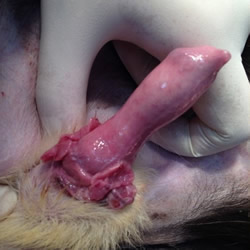
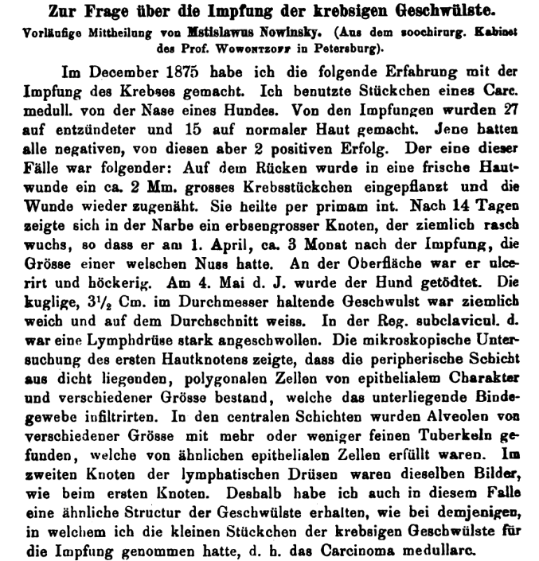
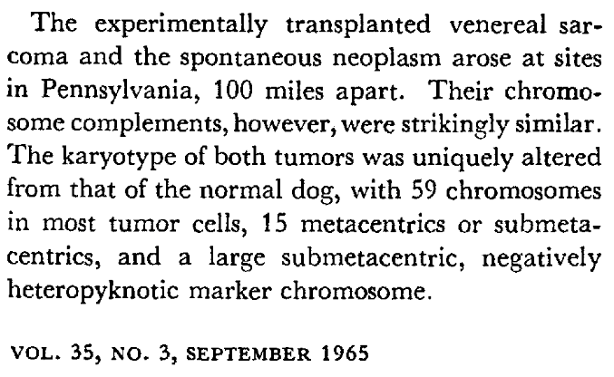

CTVT is a lineage of cancer cells that spreads between dogs during mating with the transfer of living tumor cells. The cancer cell lineage has survived continuously for thousands of years, making it one the oldest known somatic cell lineages on Earth.
Image of CTVT on a dog's penis

Photo credit: Karina Ferreira de Castro / Source: https://www.tcg.vet.cam.ac.uk/about/ctvt
Background
Novinsky’s Dog Tumor Grafts
In 1876, the Russian veterinarian Mstislav Novinsky reported the first successful experimental transmission of a tumor. He took fragments of “medullary carcinoma” from the nose of a dog, and grafted them onto healthy dogs. While most grafts onto inflamed skin failed, two of the 15 grafts placed under normal skin successfully grew. One such tumor, transplanted as a 2 mm fragment, “grew fairly rapidly, so that on 1 April—about three months after the inoculation—it had reached the size of a walnut.” Critically, Novinsky then took tissue from this secondary tumor and successfully transplanted it to a third dog. His conclusion was direct: “Thus the infection of the cancerous neoplasm is beyond doubt.” This was the first successful experimental transmission of any malignant tumor and laid the groundwork for the concept of cellular transplantation, though its full implications for CTVT wouldn’t be understood for nearly a century.
Novinsky's cancer cells weren't CTVT
After a century of chain-citation, Novinsky’s work sometimes gets confusingly presented by CTVT papers as the origin of transmissible venereal tumor research (as in Makino, 1963). But as we see in his report, the tumor he worked on wasn’t venereal, he took it from the dog’s nose. It’s still appropriate to cite him as a pioneer of the general concept of tumor transplantation.
Novinsky's 1876 report and translation

On the question of the inoculation of cancerous tumours. Preliminary communication by Mstislaw Nowinsky. (From the zoosurgical cabinet of Prof. Wowrontzoff in St Petersburg).
In December 1875 I made the following observations on the inoculation of cancer. I used small pieces of a medullary carcinoma from the nose of a dog. Of the inoculations, 27 were made on inflamed skin and 15 on normal skin. The former were all negative; among the latter there were 2 positive results. One of these cases was as follows:
On the back, a fresh skin wound was made and a cancer fragment about 2 mm in size was implanted, after which the wound was sewn up again. It healed per primam intentionem (by primary intention). After 14 days a pea-sized nodule appeared in the scar and grew fairly rapidly, so that on 1 April—about three months after the inoculation—it had reached the size of a walnut. Its surface was ulcerated and nodular. On 4 May of the same year the dog was killed. The spherical tumour, 3½ cm in diameter, was rather soft and white on section. In the right subclavicular region a lymph node was markedly swollen. Microscopic examination of the first cutaneous nodule showed that the peripheral layer consisted of closely packed polygonal cells of epithelial character, of various sizes, which infiltrated the underlying connective tissue. In the central layers, alveoli of various sizes were found, containing greater or lesser fine “tubercles”, which were filled with similar epithelial cells. In the second nodule, in the lymphatic gland, the same picture was seen as in the first nodule. I therefore obtained in this case a structure of the tumours similar to that of the one from which I had taken the small pieces for inoculation—namely, medullary carcinoma.
In the second case, I took for inoculation small pieces of the cancerous tumour from the first nodule of last year’s experiments. The inoculation was performed on a young dog three months old, which then died 1½ months after the inoculation of “plague disease”. At the autopsy, a small nodule the size of a pea was found in the scar where the inoculation had been made, without metastatic nodules in other organs. On microscopic examination I obtained preparations that are characteristic of medullary carcinoma.
From these experiments it appears that, under favourable conditions, small pieces of cancerous tumours, when transferred beneath the skin of dogs, engraft themselves. Thus the infection of the cancerous neoplasm is beyond doubt. The experiments will be continued, and a more detailed description will be given later.
Translated with ChatGPT 5 Thinking.
Competing Models of Infectious Sarcoma
The idea of a rogue cell line acting as a parasite did not fit into the established models of cancer origin at the time. The scientific consensus of the late 19th and early 20th centuries was host-centric.
Cohnheim’s Embryonic-Rest Theory: Julius Cohnheim argued that cancers arose from dormant pockets of embryonic cells left over from development. These “rests,” when triggered, would begin proliferating uncontrollably. This model explained cancer as a dysfunction of the host’s own development.
Viral Oncogenesis: Following Peyton Rous’s 1911 discovery of a virus that caused sarcomas in chickens, the idea that viruses were the primary cause of cancer gained significant traction. This fit neatly into the successful germ theory of disease: an external pathogen infects host cells and transforms them into tumors.
Chronic Irritation: Rudolph Virchow’s hypothesis that chronic inflammation could trigger cancer also remained popular since first publication in 1863.
These theories, while competing, made the same operational prediction: in any given dog, the tumour arose from that dog’s own cells. A free-living cancer cell was conceptually out of bounds.
Despite this, veterinarians began recognizing in CTVT a distinct clinical entity. Between 1902 and 1905, German veterinarian Anton Sticker performed extensive transmission studies that confirmed the tumor’s infectious and venereal nature, leading it to be widely known as “Sticker’s sarcoma.”
Falsifying the Virus Hypothesis
For decades, the viral hypothesis remained the most plausible explanation for CTVT’s origin: a virus was transmitted during mating, which then transformed the new host’s cells into a tumor. The first major piece of evidence against this model came from cytogenetics.
In 1963, Sajiro Makino published a paper
In 1965, Weber, Nowell & Hare responded to Makino in a paper analyzing the chromosomes of CTVT cells taken from two different dogs: a fresh sample from Philadelphia and a serially transplanted tumor originally from Pennsylvania. Cells from these two tumors have reported a heavily rearranged karyotype of only 59 chromosomes (a healthy dog’s cells contain 78 chromosomes). And this number stayed relatively constant between CTVT cells taken from different dogs.

The consistency of this altered karyotype was a hit against the viral hypothesis. It is one thing for a virus to induce cancer. It is another thing entirely to propose that a virus induces the exact same set of dozens of complex chromosomal fusions and deletions, independently, in every new host it infects. The probability of such a specific, complex outcome recurring identically by chance is vanishingly small. The far simpler explanation is that a single cell underwent this massive genomic rearrangement once, and all CTVT cells in the world are its direct descendants.
The fact that cell-free filtrates also failed to transmit CTVT was another strike against a classical oncogenic virus explanation.
Genomic Proof of a Single Lineage
The final nail in the coffin for the viral theory came in 2006 with a genetic analysis by Murgia et al. They analyzed two types of genetic markers from CTVT samples collected on five continents:
Mitochondrial DNA: Mitochondria have their own small genome, mtDNA. In mammals, mtDNA is inherited exclusively from the mother via the egg cell. This provides a clear marker of maternal lineage. The study found that the mtDNA in CTVT cells did not match the mtDNA of the host dog, but was consistent across tumors worldwide. So, the tumor cells had to come from a different maternal lineage than their current host.
Nuclear Microsatellites: These are short, repetitive sequences of DNA in the main (nuclear) genome that are highly variable between individuals, making them useful for genetic fingerprinting. The patterns from tumors all over the world were nearly identical to each other, but completely different from their respective hosts.
Subsequent whole-genome studies refined the age estimate and documented long-run genomic stability.
Organism Without a Body
The core weirdness of CTVT is that it forces us to reconsider the boundaries of a biological “individual.” A cooperative of somatic cells (also known as a dog) gives rise to a defector cell lineage (cancer cells). That cell lineage then escapes its native organism and continues to propagate indefinitely as a parasite, living on other dogs. It is, functionally, a new unicellular organism derived from a multicellular one. It has a genome, it evolves, and it reproduces, but it lacks a body of its own, borrowing one from each host it infects.
Edging the Definitions
Is CTVT better classified as a cancer or as a parasite? CTVT’s edge case status violates our standard definitions of both:
It violates the definition of cancer as a disease of dysregulated cell growth. The CTVT cells aren’t “dysregulated” like most cancer cells - they’re in fact genetically stable and well-adapted to their environment.
It violates the definition of a parasite as a distinct organism from a different species. CTVT is a parasitic cell line, but it originated from the same species it now infects: Canis familiaris. Is CTVT itself its own species? Debatable - this would mean we’re creating new species each time we isolate an immortalized cell line in a cell culture hood, which would likely drive taxonomists into seizure.
Somatic Traitors
The existence of CTVT represents a catastrophic failure of multicellular cooperation. A multicellular body is a society of cells that have agreed to subordinate their own reproductive interests to the good of the immortal germline. Cancer is the ultimate act of defection (or, depending on who you ask, emancipation): a single cell breaks the social contract and reverts to a selfish, single-celled agenda of endless proliferation. For this defection to become a transmissible parasite, it must solve a series of problems far harder than those faced by a simple metastatic cancer.
So You Want to Become a Transmissible Cancer
Here’s the sequence of achievements that a free-spirited cell must accomplish in order to become an independent cell line.
Become a Tumor: The founder cell must first acquire driver mutations that let it bypass adaptative multicellular restrictions on cell proliferation and survival. (Link to: Why We Get Cancer). This way, the founder cell can repeatedly clone itself and form a cell mass - a tumor.
(optional) Become Metastatic: Some cell in the resulting tumor must then gain the ability to leave its original tissue, survive transit, and colonize new sites within the original host. The best locations to colonize are those that are in frequent rough contact with other hosts - genital skin works well.
Become Transmissible: Finally, a cancer cell parts ways with the greater collective. It must:
Be physically shed from the body in a way that allows transfer to a new host.
Survive in the physiological environment of the host-host contact area.
Overcome the new host’s immune system, which is programmed to violently reject any foreign cells (an allograft).
Problems 1 and 2 are routinely solved by mundane cancers. Very few cell lines have managed to solve problem 3. How did CTVT solve it?
Immune Evasion
CTVT lineage has survived for thousands of years, hopping between millions of hosts whose immune systems are designed to instantly recognize and destroy foreign tissue. Continuous immune evasion is plausibly much harder that a one-time feat of host-jumping. CTVT had to develop multi-pronged evasion strategy.
Downregulating MHC
The immune system’s T-cells identify foreign or infected cells by inspecting proteins displayed on the cell surface by the Major Histocompatibility Complex (MHC) (Link to: The Immune System). I think of MHC molecules as comics-style thought bubbles displayed on the cell surface. If “impure thoughts” are detected by T-cells, they will command the offending cell to initiate programmed cell death.
CTVT’s trick was to stop expressing MHC molecules on its surface. As Siddle et al. put it, this loss of MHC expression is likely “a key adaptation… that has allowed it to survive as a parasitic allograft” Siddle, H. V. et al. (2013)(https://www.science.org/doi/10.1126/science.1237167). By making itself “unreadable” to T-cells, cancer cell can often establish an infection before the adaptive immune system even realizes it’s there.
Evading NK Cells
Why aren’t CTVT cells punished for the crime of hiding their MHC display? Normally, Natural Killer (NK) cells are specifically tasked to kill cells that have stopped expressing MHC-I. This is known as “missing-self” detection. If a cell isn’t displaying its thought bubble, NK cells are supposed to execute it on the spot. This is a regular anti-cancer protective layer.
CTVT evades this suspicion by secreting immunosuppressive molecules, most notably Transforming Growth Factor-beta (TGF-β). TGF-β creates a local immune-suppressive zone around the tumor, which makes immune cells, including NK cells, stand down Frampton, D. et al. (2018)(https://cancerres.aacrjournals.org/content/78/14/3961).
Why is it a good idea for NK-cells to leave missing-self cells alone in the presence of TGF-β ? I think of TGF-β as a sort of “no time to show you my ID, I’m firefighting” signal. Some legitimate cooperative cells can have low MHC expression: newly proliferated cells at wound sites haven’t yet had time to rebuild their MHC expression to normal levels, and the same goes for stem cell niches with rapidly proliferating progenitor cells. In these cases, it’s not the missing-self cells that activate TGF-β, but the surrounding non-proliferating tissue: clotting platelets, damaged ECM, niche-maintaining cells, as if saying “don’t worry, officer, they’re with me”.
(A chink in this explanation is the fact that stem cells actively downregulate their MHC presentation, not just have it passively low due to over-proliferation. I don’t have a good story to explain this, just vague gestures in the direction of reducing T-cell cytotoxicity)
Which immune evasion context was hijacked by CTVT - wound signaling, stem cell niche, or maybe fetus-mother signaling - is still an open question.
Spontaneous Regression
A hallmark of CTVT infection is that after an initial phase of aggressive growth (typically 3-6 months), the tumor will often enter a static phase or even spontaneously regress entirely. This regression is driven by the host’s immune response finally gaining the upper hand over the tumor, in part because the tumor begins to upregulate its MHC expression again. The CTVT is essentially “giving up” and raises a white flag.
Earlier I explained how during the initial, aggressive growth phase of the tumor, MHC expression is suppressed. But later in the infection cycle, MHC expression on CTVT cells comes back up, allowing the host’s immune system to finally “see” and attack the tumor.
Evolution had thousands of years to select out this late-stage MHC upregulation, but it didn’t. This makes it prudent to assume that this upregulation is part of CTVT’s adaptive strategy. Why would a cancer cell benefit from being more visible to host’s immune cells?
Proliferation-Transmissibility Trade-off
The life cycle of CTVT can be modeled as a trade-off between two competing pressures: proliferation and transmissibility. This is more or less the standard sexually transmitted disease logic as lifted from Paul Ewald’s 2004 paper Evolution of Virulence.
Let’s look at the two extremes when it comes to a CTVT cell’s proliferative ability.
Infectious agent is not proliferative enough: If a CTVT cell is not aggressive enough or has poor immune evasion, it will be cleared by the host’s immune system before it has a chance to grow large enough to be transmitted. Even if this cell survives in the new host, it will take longer to grow to a macroscopic size, so this lineage will be outcompeted by faster proliferating competitors.
In a population where most dogs have slow CTVT, a medium-speed CTVT cell will have a selective advantage for obvious reasons: higher progeny share in each new generation.
Infectious agent is too proliferative: If a CTVT variant evolves to be too aggressive, it would grow rapidly and kill its host. A dead or crippled host cannot mate or have social contact, meaning the tumor fails to transmit. This is an evolutionary dead end. The highly lethal Devil Facial Tumour Disease (DFTD) in Tasmanian devils is an example of a transmissible cancer that may be too virulent for its own long-term good, as it is driving its host species toward extinction.
In a population where most dogs have aggressive CTVT, a medium-speed CTVT cell will also have a selective advantage: if 1 in 10 aggressive-CTVT dogs are in a healthy enough state to mate, but all 10 mild-CTVT dogs are healthy, then the next generation of CTVT tumors will have 10x more mild-CTVT cells, even if each mild-CTVT cell is at a disadvantage within the tumor itself.
CTVT lineages we see today are descendants of those cells who have found a solution that is suboptimal for any single cell in the short term but represents a stable, long-term adaptation for the survival of the entire lineage. It’s so far uncertain whether DFTD cells will also find this solution before they drive their hosts extinct.
The Cancer That Cured Itself of Cancer
We have learned that CTVT has adapted to keep itself mild. But we also know that CTVT is a grossly corrupted lifeform born from the ultimate act of cellular defection. Why isn’t it defecting more? Just like any other cancer, we would expect to find genomic instability, subclone proliferation, and internal competition. How has this lineage of defectors maintained its own clonal integrity and avoided collapsing into a chaotic mess of “cancers of the cancer” for 11,000 years?
Maintaining Clonal Integrity
CTVT appears to undergo strong negative selection. While CTVT has accumulated an enormous number of mutations and chromosomal aberrations compared to its dog host, it didn’t seem to acquire most of them by slowly gaining new advantageous traits over time (positive selection). Instead, selection seems to be ruthlessly purging any new mutations that threaten CTVT’s core, essential functions for being a transmissible parasite Strakova, A. et al. (2021)(https://www.science.org/doi/10.1126/science.aay9924).
What mutation would make a CTVT cell over-proliferate in the late phase of infection, compared to its neighbors? From (Siddle, Kaufman 2014), IFN-γ signal from the host’s immune system seems to be the driver of CTVT’s late-phase immune-sensitivity. So it seems likely to me that knocking out IFN-γ receptors on CTVT cells would be a good start for defection.
Unfortunately for any meta-defector cell, the immune-insensitive subclone would presumably overtake the rest of the tumor’s cells, cripple the host, and fail to transmit to a new host. This way, any act of defection can only betray the local CTVT neighbors and die out, not affecting the global CTVT population.
Continue to read the draft.
Log in and become a supporter to read the full article.